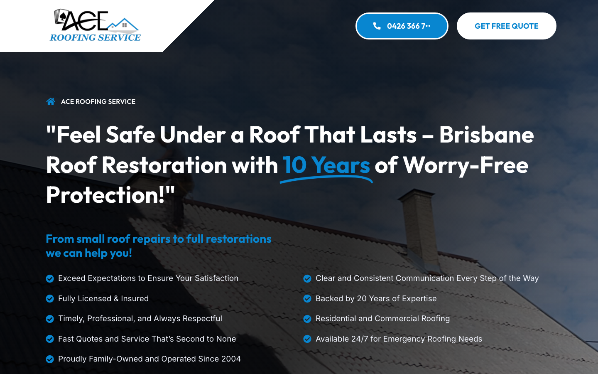
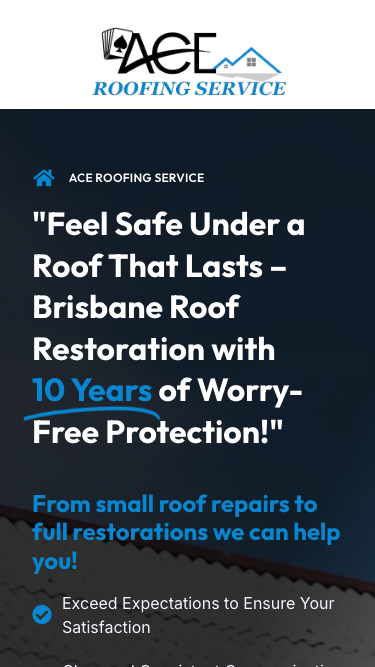

54/100 · moderate_candidate · 行业：roofer · 地区：Brisbane · Google 评价：5★ （37 条）
投入分级： B 预览试探 — ChatGPT 生成
mockup hero 图 + 短邮件试反应
触发依据： - B · moderate_candidate · audit 54<60 · 37 评论≥30 · 5★≥4
产品档位： T2 1-page + annual
maintenance
建议报价： 一次性 null
下一步行动： 用 ChatGPT Image / Gemini Imagen 生成 hero mockup 预览图 + master.md PDF + 1 封 personalized 邮件试探 + 1 次跟进。回应后升级到 A 档处理。
线索来源 · 联系开场可用: - 来源:
Google Places API (官方搜索) - 搜索关键词:
roofer brisbane - 结果排名: 第 6 位 -
首次发现: 2026-05-14 - Batch:
places-roofer-brisbane-202605150200
审计结论： audit_score=54 → moderate_candidate · weakest: gbp 32, seo 45 · 1 critical issues


慢速 4G 加载实景视频（1.6 Mbps · 150ms 延迟 · 4× CPU 节流，模拟真实手机访客的体验）：
The page has a professional roofing look and visible contact actions, but the above-fold area is text-heavy and does not make the fastest path to a quote feel effortless.
新鲜度 6/10 · 信任度 7/10 ·
转化准备度 6/10 · 设计年代
slightly_outdated
值得保留的优点： - Phone and quote actions are visible in the desktop header. - The page uses a real roofing background image, which fits the service category. - Trust claims such as licensed, insured, family-owned, and emergency availability are present.
技术事实
phone hidden below fold or missing
普通话翻译
电话号码在第一屏看不到 — 客户必须滚动才能找到怎么联系你。
对客户的影响
本地服务客户 60-70% 倾向打电话沟通（不是填表单）。电话号没在第一屏 = 这部分客户里很多人会直接关掉去搜下一家。这是最便宜的转化优化之一。
技术事实
The blue phone button in the header shows “0426 366 7..” with the end of the number visually cut off or abbreviated.
普通话翻译
电话按钮里的号码看起来被截断了，像是网站没有做好。
对客户的影响
电话是本地服务最重要的成交入口之一。号码显示不完整会直接降低信任，遇到漏水或紧急维修的客户可能马上打给竞争对手。
正确长啥样
The full phone number displayed clearly inside the button, with enough horizontal padding and no truncation.
Redesign 怎么改
Increase the phone button width, prevent text truncation, and test the full number across desktop and mobile header breakpoints.
技术事实
no tel: link
普通话翻译
电话号码不是 click-to-call 链接（手机上点击不会自动拨号）。
对客户的影响
移动客户必须复制号码再切到拨号界面再粘贴 —
每多一步操作就流失一批客户。修复成本只是把
<a href="tel:0712345678">
写对，但能立刻拉高电话转化率。
技术事实
title=‘# “Feel Safe Under a Roof That Lasts – Brisbane Roof Restora’ contains-name=false contains-niche=false
普通话翻译
你网站的浏览器标签 title 没把业务名字 + 服务关键词写清楚（比如该写「Ace Roofing Service - roofer Brisbane」，但目前是泛泛一句）。
对客户的影响
Google 搜索结果里展示的就是这个 title。写不清楚 = 排名靠后 + 即使排上来客户也不知道是不是匹配的服务。SEO 最便宜的修复，但很多本地企业完全没做。
技术事实
no LocalBusiness JSON-LD
普通话翻译
网站没有 LocalBusiness JSON-LD 结构化数据（让 Google / AI 知道你是本地企业、地址、电话、营业时间的标准格式）。
对客户的影响
Google「附近的服务」「Knowledge Panel」「AI Overview」都依赖这类结构化数据。没有 = 即使排名上去也不会出现在右侧 Knowledge Panel 或地图卡片里 — 错失高转化的展示位。AI agent / ChatGPT 引用本地商家时也是基于这些数据。
技术事实
The hero headline spans three large lines and includes a long quoted sentence: “Feel Safe Under a Roof That Lasts - Brisbane Roof Restoration with 10 Years of Worry-Free Protection!”
普通话翻译
首页第一屏的标题太长太大，客户要读好几秒才知道你具体做什么。
对客户的影响
本地客户通常会在几秒内决定要不要继续看。标题读起来费劲，会让一部分从 Google 商家资料点进来的客户直接返回去看下一家。
正确长啥样
A shorter headline such as “Brisbane Roof Repairs & Restoration” with one supporting line underneath, followed immediately by phone and quote buttons.
Redesign 怎么改
Rewrite the hero into a direct service-led headline, reduce the heading size by about 20-30%, and place a clear primary CTA directly under the subheading.
技术事实
The “GET FREE QUOTE” button is a white pill in the top-right, while the blue phone button beside it is more visually dominant.
普通话翻译
“获取免费报价”按钮放在右上角，而且没有电话按钮显眼，客户不一定第一眼看到。
对客户的影响
很多屋顶维修客户会先想要报价，不一定马上打电话。如果报价入口不够明显，会减少询盘，尤其会影响从手机搜索进来的客户。
正确长啥样
A high-contrast primary “Get Free Quote” button in the hero area, paired with a secondary click-to-call button, both visible without scrolling.
Redesign 怎么改
Move a stronger quote CTA into the main hero content, use the brand blue or another high-contrast accent for it, and keep the phone CTA next to it as a secondary action.
技术事实
The hero includes nine checkmark bullet points across two columns, including long lines such as “Clear and Consistent Communication Every Step of the Way”.
普通话翻译
第一屏放了太多勾选卖点，信息看起来有点挤，重点反而不突出。
对客户的影响
客户不会逐条读完九个卖点。他们通常只看几个最关键的信息，比如有牌照、有保险、能不能紧急处理、多久能报价。重点不清楚会降低联系意愿。
正确长啥样
Three to four compact trust badges above the fold, such as “Licensed & Insured”, “Since 2004”, “Emergency Roofing”, and “Free Quotes”.
Redesign 怎么改
Condense the checklist into four short trust badges under the CTA, then move detailed service promises lower on the page with icons and supporting copy.
PSI 给的是宏观分数，下面是具体可改的两块：图片格式与 tracker 脚本。
总评： 部分优化 — 还有空间
具体问题： - [minor] 11 张图仍是 JPG/PNG，建议转 WebP - [major] 9/11 张图缺 alt 文字 — 影响 SEO + 可访问性 + AI 抓取
已识别的 tracker：
| 工具 | 类型 | 请求数 | 字节 |
|---|---|---|---|
| Google Tag Manager | analytics | 2 | 300.2 KB |
| Google Analytics | analytics | 1 | 0.0 KB |
观察： 3 个 tracker 合计加载了 300 KB —— 这些都是阻塞主线程的脚本，是性能 + 隐私双角度的销售切入点。redesign 时可以建议清理不再使用的 tracker。
客户最常担心的问题：「我重做网站，会不会丢掉 Google 排名？」这一段直接回答。
https://aceroofingservice.com.au/sitemap_index.xml页面分类：
| 类型 | 数量 |
|---|---|
| 首页 | 1 |
Sitemap lastmod 跨度： 最旧 2024-10-14 → 最新 2024-10-14
Redirect 计划承诺： redesign 上线时我们会附一份 1 条 1:1 redirect 表（旧 URL → 新 URL），保证 Google 已经索引的页面权重无损迁移。已经在 Google 第一二页的关键词不会丢。
长尾覆盖： 无 — 没有服务专项页面，redesign 时是关键补点
关键发现： 客户的网站超过一年没动过。redesign 之后我们也建议帮忙建立最低限度的内容更新节奏（每月 1 篇 case study 即可），否则 AI / Google 都会判定网站「死站」。
客户能不能 方便地 把信息留下来 =
直接的转化路径。这一段审视所有 <form> 元素的可用性 +
防 spam 配置。
已部署的人机验证： - reCAPTCHA v2 (visible “I’m not a robot”) — 高摩擦 - reCAPTCHA v3 (invisible) — 低摩擦
Audit 总结：
quarantine）partial (只有 2/3 —
建议补全)这是后续 「Social Media Management 月度包」 或 「Cold Outreach 启动包」 的前置条件 —— 邮件 DNS 没修好，发出去的邮件全进垃圾箱。redesign 时一并处理。
从网站源码识别出来的工具，能帮我们判断这位客户的数字成熟度。
数字成熟度打分： 2 / 6 （中 — 已有基础设施，缺少深度运营）
客户可能有数月 / 数年的历史数据 + 广告投放受众 sit 在这些 ID 上面。重做时必须用同一套 ID 重新接进新网站，否则等于清零所有累积。
我们 redesign 交付清单会把这些列为「必须 setup 项」。
本地服务的客户在掏钱之前会查这些凭证。缺失 = 客户跳到下一家。
信任分： 40/100
GEO = Generative Engine Optimization。ChatGPT、Perplexity、Google AI Overviews 这些 AI 搜索产品不像传统搜索引擎那样按”关键词排名”工作，它们直接抓取结构化数据并把答案合成给用户。如果你的网站在 AI 抓取这一块做得不到位，等于在生成式搜索时代隐身。
AI 可发现性总分： 30 / 100 — AI agent / ChatGPT 几乎无法准确引用此网站 — 在生成式搜索时代等于隐身
localbusiness_schema — Organization JSON-LD
present (LocalBusiness preferred for local services)eeat_warranty_trust — warranty/guarantee
mentionedjsonld_at_least_one — 6 JSON-LD block(s)
detected on pagellms_txt_present (5 分) — no /llms.txt at
standard pathai_bot_robots_policy (5 分) — robots.txt has no
explicit policy for AI crawlers (GPTBot/ClaudeBot/etc)service_schema (10 分) — no Service JSON-LDfaqpage_schema (10 分) — no FAQPage JSON-LD
(loses AI Overview / featured snippet eligibility)aggregaterating_schema (5 分) — no
AggregateRating JSON-LD (★ rating not shown in search snippets)breadcrumb_schema (5 分) — no BreadcrumbList
JSON-LDsemantic_landmarks (10 分) — 0 semantic
landmarks present: nonefaq_qa_pattern (10 分) — 1 question-style
heading(s) found (Q&A format helps AI extraction)eeat_business_credentials (10 分) — only 1/4
credentials found (license/QBCC) — need ≥2 of: ABN, license/QBCC,
years-in-business, insurance销售切入： 「ChatGPT 现在每月 30 亿次搜索，本地服务用户问『Brisbane 哪家屋顶公司靠谱』，AI 回答时只引用结构化数据完整的网站。你目前在这个新阵地的得分是 30/100。」
注：这一段只给运营内部看，不进入客户报告。 用来判断这个 lead 是不是匹配我们「小网站 / 多批量 / 快上线」的产品定位。
small —
小型，符合我们标准产品包定位报价以上方 建议报价 为准（来自 entity.grade.recommended_pricing / PRODUCT_TIER_TABLE）。本段只用来判断 lead 是否匹配产品定位，不竞争报价。
触发依据： - 已部署 2 个追踪工具
redesign 是一次性收入。以下是基于这个客户当前现状自动识别的持续性服务包机会，可以在 redesign 提案签字时一并捆绑进去。
触发依据： 网站上没检测到任何社交媒体链接 — 连基础的多渠道触点都缺。
包内容： 一次性：FB / IG 商家档案 setup + 品牌头像/封面 + 内容模板 5 套 (3-5K 一次性)。月度：4 帖 + 评论管理 + 月度报表。
月度费用区间： $1,500 setup + $600-900/月
销售切入： 「Google Maps 流量进来后没有第二落点，意味着客户当下没决定就走了 — 没办法再触及。社交账号是免费的二次触达管道。」
触发依据： 网站没有 blog 板块 — 没有内容营销基础设施，长尾 SEO 流量为零。
包内容： 每月 2 篇 SEO-optimized blog（800-1,200 字）+ 每季度 1 篇 case study（含 before/after 图）+ 关键词研究报告。
月度费用区间： $400-800/月
销售切入： 「ChatGPT 时代搜索引擎更偏爱有「专家深度内容」的网站。你目前的网站只有服务介绍页 — AI 可引用的素材几乎为零。」
-2026-05-11-v1codex_cliGoogle Places · most_relevant (max 5)